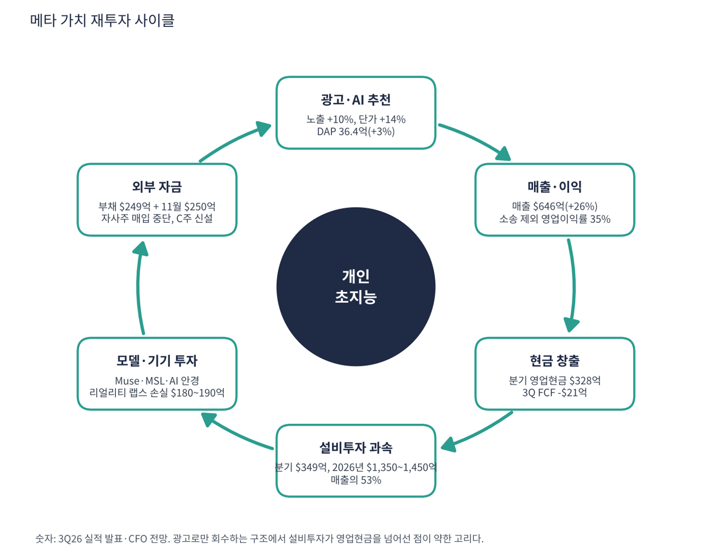

메타는 페이스북·인스타그램·왓츠앱·메신저·스레드를 운영하는 세계 최대 소셜 미디어 회사다. 매출의 98%가 광고에서 나오고 매일 36억 명이 메타 앱을 하나 이상 쓴다. 2021년 사명을 바꾸고 메타버스에 대규모로 투자했지만 2025년부터 투자의 중심을 AI, 특히 초지능 연구소(MSL)로 옮겼다. 지금은 광고 엔진이 AI로 더 빨라졌는데, 그 AI에 들어가는 돈이 이익과 현금을 먹는 구간이다.
| 항목 | 내용 |
|---|---|
| 종목 | Meta Platforms, Inc. (META) · NASDAQ · 인터넷 서비스 · 2004년 설립 · 본사 캘리포니아주 멘로파크 |
| 시가총액 | 약 $1.56조 · TTM PER 20.8배 · P/S 6.5배 (11/6 종가 $610.15) |
| 최근 분기(3Q26) | 매출 $646억(+26%), 영업이익 $130억(20%), 순이익 $99억, EPS $3.83. 소송 합의 $98.9억 제외 시 영업이익 $229억(35%), EPS $7.40 |
| 다음 분기 가이던스 | 4Q26 매출 $730~760억(+22~27%). 2026년 총비용 $1,750~1,790억, 설비투자 $1,350~1,450억 |
| 재무 구조 | 현금·유가증권 $825억, 장기 부채 $809억(연초 $587억), 직원 66,775명(-15%). 11월 회사채 $250억 추가 발행(트레이딩뷰 보도) |
| 다음 실적 | 4Q26 실적: 2027년 1월 말 발표 예정 |
| 직책 | 인물 | 역할·특징 |
|---|---|---|
| 창업자 겸 CEO | 마크 저커버그 | 차등 의결권으로 경영권 보유. '모든 사람을 위한 개인 초지능'을 최종 목표로 설정하고 투자 규모를 직접 결정 |
| CFO | 수전 리 | 분기마다 비용·설비투자 전망을 상향/조정하며 투자 회수 논리를 설명하는 창구 |
경영 스타일: '핵심 사업이 강할 때 다음 플랫폼에 크게 건다'. 저커버그는 3분기에 "투자가 성과를 내고 있고 핵심 사업은 강하다"고 말했다. 행동은 더 공격적이다. 2026년 설비투자를 $135~145B로 잡고(2025년 약 $72B의 약 2배), 2027년에도 "공격적으로 투자를 지속"하겠다고 했다. 자사주 매입은 2025년 $26B에서 2026년 0으로 멈췄고, 대신 부채 $24.9B를 새로 냈다. 비용 쪽에서는 직원 수를 15% 줄여 AI 인재 중심으로 재편했다.
AI 추천·랭킹·광고 타기팅으로 참여 시간과 광고 효율을 높였고(CFO: "상당한 추가 광고 매출"), 9월에 첫 프론티어 모델 Muse와 Muse Wonder를 출시했다. 레이밴 메타 AI 안경 같은 기기로 개인 초지능을 쓰게 하려 한다.
광고에서 번 돈으로 세계 최대 규모의 AI 인프라를 짓고 그 AI로 다시 광고를 키우는 순환이다. 무의결권 C주를 신설해(사실상 2:1 분할) 자금 조달·인재 보상·인수에 쓰겠다고 했고, 저커버그의 경영권은 유지된다.
| 분기 | 매출 | 광고 | 영업이익 | 이익률 | 순이익 | EPS | 특이 사항 |
|---|---|---|---|---|---|---|---|
| 2024.4Q | $48.4B | $46.8B | $23.4B | 48% | $20.8B | $8.02 | |
| 2025.1Q | $42.3B | $41.4B | $17.6B | 41% | $16.6B | $6.43 | |
| 2025.2Q | $47.5B | $46.6B | $20.4B | 43% | $18.3B | $7.14 | |
| 2025.3Q | $51.2B | $50.1B | $20.5B | 40% | $2.7B | $1.05 | 일회성 세금 비용(세율 87%) |
| 2025.4Q | $59.9B | $58.1B | $24.7B | 41% | $22.8B | $8.88 | 매출 첫 $59B대 |
| 2026.1Q | $56.3B | $55.0B | $22.9B | 41% | $26.8B | $10.44 | 세금 혜택 반영 |
| 2026.2Q | $60.8B | $59.4B | $18.8B | 31% | $15.8B | $6.18 | 소송 비용 $2.4B |
| 2026.3Q | $64.6B | $63.1B | $13.0B | 20% | $9.9B | $3.83 | 소송 합의 $9.89B |


흐름 요약: 매출은 가속, 이익은 감속이다. 매출 성장률은 2026년 1분기 33%, 2분기 28%, 3분기 26%로 높게 유지됐는데 영업이익은 2분기 -8%, 3분기 -37%로 줄었다. 3분기 비용은 1년 새 68% 늘었다. 소송 비용을 빼도 비용 증가율(약 36%)이 매출 증가율(26%)보다 높다. 연구개발비 $151억 → $201억, 원가(데이터센터 운영) $92억 → $134억, 감가상각 $50억 → $72억이 늘었다. 두 선이 교차했다. 영업이익률(48% → 20%)과 설비투자/매출(30% → 53%)이 2026년 2분기에 자리를 바꿨다. 영업현금흐름은 분기 $320~360억으로 안정적이지만 설비투자가 $140억에서 $340억으로 늘어 잉여현금흐름이 $130억에서 -$21억(3분기)이 됐다. 순이익은 일회성 때문에 흔들린다. 2025년 3분기는 미국 세법 변경에 따른 이연법인세 비용(세율 87%)으로 $27억에 그쳤고, 2026년 1분기는 세금 혜택으로 영업이익보다 컸다. 세부 내역은 10-Q로 확인이 필요하다.
| 사업 | 돈을 버는 방식 | 3Q26 매출 | 성장 |
|---|---|---|---|
| 광고 (앱 패밀리) | 페이스북·인스타그램·왓츠앱·메신저·스레드의 피드·릴스·스토리 광고. 노출 수 × 노출당 단가 | $631억 | +26% |
| 기타 (앱 패밀리) | 왓츠앱 비즈니스 메시징, 메타 인증 구독 등 | $11억 | +59% |
| 리얼리티 랩스 | 퀘스트 VR 헤드셋, 레이밴 메타 AI 안경 등 하드웨어·콘텐츠 | $4억 | -6% |

| 분기 | 일간 활성 사용자(DAP) | 광고 노출 | 광고 단가 |
|---|---|---|---|
| 2025.4Q | 35.8억 (+7%) | +18% | +6% |
| 2026.1Q | 35.6억 (+4%) | +19% | +12% |
| 2026.2Q | 36.0억 (+3%) | +14% | +12% |
| 2026.3Q | 36.4억 (+3%) | +10% | +14% |
메타는 여전히 광고 회사다. 광고 매출은 노출 수와 노출당 단가의 곱인데, 노출 증가율이 19% → 10%로 둔해지고 단가가 성장을 끌고 있다. 사용자(DAP +3%)는 포화에 가까워 앞으로의 성장은 AI가 광고를 얼마나 더 정확하고 비싸게 팔게 하느냐에 달려 있다. 리얼리티 랩스는 분기마다 $40~60억 적자를 내고 8개 분기 적자 합계가 약 $370억이다. 회사는 2026년 손실 $180~190억을 2027년 약 $150억으로 줄이고 그 돈을 AI로 돌리겠다고 했다.
저커버그의 3분기 메시지는 "모든 사람을 위한 개인 초지능을 향한 중요한 이정표"였다. 메타가 가려는 곳은 광고 플랫폼에서 36억 명에게 개인 초지능을 제공하는 AI 회사다.
| 축 | 내용 |
|---|---|
| AI가 광고를 키운다 | 추천·랭킹·광고 타기팅에 AI를 적용해 참여 시간과 광고 효율을 올린다. 현재 이익의 원천 |
| 초지능 연구소(MSL) | 자체 프론티어 모델 Muse로 오픈AI·구글과 경쟁. 회수 기간은 핵심 사업보다 길다고 회사도 인정 |
| AI 기기 | 레이밴 메타 AI 안경 등 개인 초지능을 쓰는 하드웨어 |
| 자본 구조 | 무의결권 C주 신설(2027.1.19 효력), A·B주 1주당 C주 1주 배당(사실상 2:1 분할). 자금 조달·직원 보상·인수에 사용, 저커버그의 경영권은 유지 |


위: 트레이딩뷰 주봉 데이터로 재구성(10·20·40주선). 아래: 트레이딩뷰 공개 차트 일봉 캡처(작도 숨김, 이동평균선·볼린저밴드만 표시).
| 이동평균 | 값 | 종가 대비 | 해석 |
|---|---|---|---|
| 5일선 | $614.60 | -0.7% | 하락 멈추고 횡보 |
| 20일선 | $662.67 | -7.9% | 실적 갭 상단 |
| 50일선 | $674.92 | -9.6% | 9~10월 고점권 평균 |
| 100일선 | $633.43 | -3.7% | 200일선과 거의 겹침 |
| 200일선 | $631.94 | -3.4% | 10월 말 이탈. 1차 회복 목표 |
배열은 50일 > 20일 > 100일 ≈ 200일 > 5일 > 주가다. 1년 넘게 $520~780의 넓은 박스권이고 실적 때마다 ±10% 움직인다. 2026년 3/27 연저점 $520, 4월 $688 반등, 7월 말 실적 후 $524, 9월 Muse 출시 전후로 $616 → $780(9/24 신고가), 10/21 실적(소송 합의금·비용 상향) 후 -9%, 11월 첫 주 장중 $584 → $610 마감.
| 규칙 | 기준 | 현재 값 | 신호 |
|---|---|---|---|
| 장기 추세 필터 | 종가 vs 200일선 | $610.15 < $631.94 | 매도 |
| 중장기 교차 | 50일선 vs 200일선 | $674.92 > $631.94 | 매수 |
| 단기 교차 | 20일선 vs 50일선 | $662.67 < $674.92 | 매도 |
| 돈키언 채널 | 55일 고가 $779.82 / 저가 $543.23 | 중간값 $661.53 아래 | 매도 |
| 1개월 모멘텀 | 21거래일 수익률 | -15.4% (기준 $720.89) | 매도 |
| 3개월 모멘텀 | 63거래일 수익률 | +2.6% (기준 $594.92) | 매수 |
| 6개월 모멘텀 | 126거래일 수익률 | +0.1% (기준 $609.63) | 매수 |
| 12개월 모멘텀 | 252거래일 수익률 | -4.1% (기준 $635.95) | 매도 |
| 종합 (8개 평균) | -0.25 | 매도 우위 |
해석: 박스권 종목의 전형적인 모습이다. 6개월 모멘텀이 +0.1%로 사실상 0이고 3·12개월도 ±5% 안이라 작은 가격 변화에도 신호가 바뀐다. $632(200일선)를 회복하면 점수 0, $636(12개월 기준)을 넘으면 +0.25가 된다. 14일 ATR $23.83 (3.9%).
| 가격 | 무엇이 바뀌나 | 의미 |
|---|---|---|
| $632 ~ 636 | 200일선, 12개월 기준가 | 장기 추세 필터·12개월 모멘텀 매수, 점수 +0.25 |
| $662 ~ 675 | 20·50일선, 돈키언 중간값 | 단기 교차·채널 매수, 점수 +0.75 가능 |
| $595 / $610 이탈 | 3개월·6개월 기준가 | 매수 신호 2개 꺼짐, 점수 -0.75 |
| $543 이탈 | 55일 저점 붕괴 | 연저점권($520) 시험 |
| 구분 | 가격대 | 근거 |
|---|---|---|
| 저항 2 | $700 ~ 720 | 10월 박스 하단, 1개월 기준가 |
| 저항 1 | $632 ~ 675 | 200·100·20·50일선 밀집 |
| 지지 1 | $576 ~ 595 | 피보나치 78.6%($576), 11월 저점($584) |
| 지지 2 | $520 ~ 543 | 55일 저점, 3월 연저점 |
본업은 강하고 투자 회수에 대한 의심이 가격을 누른다. $600~610에서 40%, $576~590에서 40%를 분할 매수하고 $632 회복 확인 시 20%를 추가한다(평균 약 $598, 손절 $535 기준 손익비 1:1~1:1.9). 1차 $662(20일선·실적 갭 상단), 2차 $720(10월 박스)에서 익절한다. $576 종가 이탈이면 추가 매수를 중단하고 $535 종가 이탈이면 손절한다. 확인 신호는 4분기 매출이 가이던스 상단($760억) 이상, 2027년 설비투자 증가율 둔화, Muse 기반 신규 매출 공개다. 1월 C주 배당(2:1 분할 효과)으로 주가가 반으로 조정되는 이벤트가 있어 가격대를 환산해야 한다.
| 악재 요인 | 내용 | 강도 |
|---|---|---|
| 투자 회수 | 설비투자 연 $1,350~1,450억, 2027년에도 증가 예고. 초지능 투자의 회수 시점이 불확실하고 FCF가 마이너스로 전환 | 높음 |
| 청소년 소송·규제 | 주 검찰총장 52명과 최대 $185.9억 합의(3분기 $98.9억 반영). 추가 재판과 해외 규제 예정 | 높음 |
| AI 경쟁 | 오픈AI·구글·앤스로픽과 프론티어 모델 경쟁, 인재 확보 비용 급증 | 중간 |
| 광고 경쟁 | 틱톡·유튜브·아마존 광고. 노출 증가율 둔화(19% → 10%) | 중간 |
| 희석 | C주 신설로 향후 주식 발행 가능성, 자사주 매입 중단 | 참고 |
| 티커 | 회사 | 시가총액 | PER(TTM) | PEG | P/S | EPS 성장(YoY) |
|---|---|---|---|---|---|---|
| META | 메타 | $1,560B | 20.8배 | 0.67 | 6.18배 | +30% |
| GOOGL | 알파벳 | $3,476B | 14.9배 | 0.17 | 7.39배 | +89% |
| MSFT | 마이크로소프트 | $3,940B | 27.7배 | 0.74 | 11.09배 | +36% |
| AMZN | 아마존 | $2,804B | 21.0배 | 0.27 | 3.45배 | +75% |
| AAPL | 애플 | $4,975B | 38.2배 | 1.84 | 10.21배 | +20% |
| ORCL | 오라클 | $351B | 18.2배 | 0.37 | 4.70배 | +48% |
| PLTR | 팔란티어 | $386B | 112.4배 | 0.45 | 53.69배 | +234% |
EPS 성장률은 트레이딩뷰 TTM 값이다.
비교 결론: 메타 PER 20.8배는 마이크로소프트(27.7)·애플(38.2)보다 낮고 아마존(21.0)과 같으며 알파벳(14.9)보다 높다. PEG 0.67은 마이크로소프트(0.74)보다 낮지만 알파벳(0.17)·아마존(0.27)보다 높다. 가격은 빅테크 중 중간 아래인데 동종 중 FCF가 가장 빨리 나빠지는 종목이다. 같은 PER이라도 알파벳·마이크로소프트는 클라우드로 AI 투자를 외부에 되팔지만 메타는 광고로만 회수한다.
메타는 적자 기업이 아니다. TTM 순이익 $753억, EBITDA $1,043억이라 '런웨이'(남은 현금으로 몇 년 버티나)는 의미가 없다. 그러나 3분기 잉여현금흐름이 처음 마이너스(-$21억)가 됐고 자사주 매입이 멈췄다. 투자가 현금을 먹는 속도를 점검했다.
| 지표 | 값 | 계산·출처 | 해석 |
|---|---|---|---|
| 영업현금흐름 (3Q26) | $328억 | 회사 발표 | 분기 $320~360억으로 안정 |
| 설비투자 (3Q26, 리스 포함) | $349억 | 회사 발표 | 영업현금보다 큼 → FCF -$21억 |
| 잉여현금흐름 (TTM) | +$286.5억 | 트레이딩뷰, 11/9 기준 | 최근 분기만 보면 마이너스로 전환 |
| 현금·유가증권 / 장기 부채 | $825억 / $809억 | FY 3Q26 말 (회사 발표) | 순현금 약 $16억. 11월 $250억 추가 발행 전 수치 |
| 주주환원 | 자사주 매입 0 (2025년 $260억) | 2026년 중단, 배당은 유지 | 현금이 설비투자 쪽으로 쏠림 |
| 가정 | 연 FCF | 현금 $825억 기준 | 의미 |
|---|---|---|---|
| 2026년 설비투자 $140B vs 영업현금 약 $131B (분기 $328억 × 4) | 약 -$90억 | 현금의 약 11% | 버틸 수 있으나 매입은 어려운 수준 |
| 2027년 설비투자 $200B 가정 (영업현금 $140B) | 약 -$600억 | 약 1.4년 | 외부 조달 없이는 1~2년. 회사채·C주 신설과 연결되는 지점 |
| 위 + 광고 성장 둔화로 영업현금 -15% | 약 -$810억 | 약 1.0년 | 이 구간에서 시장이 가장 크게 반응할 것 |
설비투자 $200B, 영업현금 $140B, 영업현금 -15%는 내가 둔 스트레스 가정이며 회사 가이던스가 아니다(2027년 설비투자 전망은 1월 실적에서 나온다).
| 기준 | 매출 | P/S | 비고 |
|---|---|---|---|
| 트레이딩뷰 표시값(11/6 환산) | – | 6.2배 | 산출 기준 차이로 아래보다 낮음 |
| 최근 4분기(TTM) | $2,416억 | 6.5배 | 시총 $1.56조 ÷ $2,416억 |
| 2026년 (4Q 가이던스 중간값 반영) | $2,562억 | 6.1배 | 1~3분기 $1,817억 + 4Q $745억 |
| 동종 빅테크 | – | – | 마이크로소프트 11.1, 알파벳 7.4, 아마존 3.4, 애플 10.2 |
해석: 메타 P/S 6.5배는 마이크로소프트·애플보다 낮고 알파벳과 비슷하다. 영업이익률(소송 제외 35%)이 높아 매출당 이익은 크지만, 이 이익이 설비투자로 빠져나가 FCF로 남지 않는 것이 P/S가 낮은 이유다.
| 지표 | 값 | 판정 |
|---|---|---|
| EBITDA (트레이딩뷰, TTM) | $1,043억 | 흑자 |
| EBITDA 마진 | 43.2% | $1,043억 ÷ $2,416억 |
| 영업이익 (TTM) | $794억 | 3Q26 $130억은 소송 합의 $98.9억 포함 |
| 영업이익 → EBITDA 차이 | 약 $249억 | 감가상각·상각비. 3분기 감가상각만 $72억(연 $290억 안팎) |
| EV/EBITDA | 약 15.2배 | (시총 $1.56조 + 순부채 $290억(리스 포함 총부채 $1,121억 - 현금 $830억)) ÷ $1,043억 |
EBITDA는 흑자이고 마진 43%지만 영업이익과의 차이(감가상각)가 빠르게 커지고 있다. 설비투자가 매출의 53%인 만큼 앞으로 감가상각이 EBITDA와 영업이익의 격차를 더 벌린다.
| 방식 | PER | EPS 성장률 | PEG | 판정 |
|---|---|---|---|---|
| 트레이딩뷰 (TTM, 11/6 환산) | 20.8배 | +29.6% | 0.67 | 투자 적격 |
| 직접 계산 (분기 순이익 TTM) | 20.7배 ($1.56조 ÷ $753억) | +29% ($584억 → $753억) | 0.72 | 투자 적격 |
| 영업이익 기준 (소송 비용 제외, 직접 계산) | 20.7배 | +12% ($819억 → $917억) | 약 1.7 | 기준 초과 |
| 영업이익 기준 (소송 비용 포함) | 20.7배 | -3% ($819억 → $794억) | 해당 없음 | 해당 없음 |
판정: 트레이딩뷰 PEG 0.67은 '투자 적격'(1.0 이하)이지만 이 값은 믿기 어렵다. 비교 기준인 2025년 3분기 순이익이 세율 87%의 일회성 세금 비용($27억)으로 짓눌려 있어 이번 TTM 성장률(+29.6%)이 부풀려졌다. 본업인 영업이익으로 보면 소송 비용을 빼도 성장이 +12%뿐이라 PEG는 약 1.7로 기준(1.0)을 넘고, 소송 비용을 포함하면 영업이익이 오히려 3% 줄었다. 영업이익 기준 값은 소송 비용 $98.9억(3Q)과 $24억(2Q)을 더해 내가 직접 계산한 추정치다.

메타 사이클의 엔진은 AI가 키우는 광고 매출과 이익이다. 번 현금이 데이터센터·서버·AI 인재에 들어가고, 그 AI가 추천·타기팅을 개선해 광고를 키운다. 지금은 이 고리에서 투자 쪽 굵기가 현금 창출 쪽을 넘어섰다.
| 고리 | 현재 숫자 | 고리 강도 | 약해지는 신호 |
|---|---|---|---|
| ① 광고·AI 추천 | 노출 +10%, 단가 +14%, DAP 36.4억(+3%) | 강함 | 노출·단가가 함께 한 자릿수로 둔화 |
| ② 매출·이익 | 매출 +26%, 영업이익률 35%(소송 제외), 4Q 가이던스 +22~27% | 강함 | 소송 제외 이익률이 30% 아래로 하락 |
| ③ 현금 창출 | 영업현금 분기 $328억, TTM FCF +$286.5억 → 3Q -$21억 | 약화 | 영업현금이 분기 $300억 아래로 |
| ④ 설비투자 | 분기 $349억, 2026년 $1,350~1,450억, 2027년도 증가 예고 | 과속 | 설비투자가 영업현금을 계속 초과 |
| ⑤ 모델·기기 | Muse 출시, MSL, 레이밴 AI 안경, 리얼리티 랩스 손실 $180~190억 | 회수 불확실 | Muse가 광고 외 신규 매출을 못 만듦 |
| ⑥ 외부 자금 | 부채 $249억 발행 + 11월 $250억, C주 신설, 자사주 매입 중단 | 전환 | 추가 대규모 발행 또는 희석 |
이 사이클의 구조: 알파벳·마이크로소프트처럼 클라우드로 AI 투자를 외부에 되파는 경로가 메타에는 없어 회수가 광고 개선 하나에 달려 있다. 강한 고리는 ①·②이고 약한 고리는 ④·⑥이다. 1월 말에 볼 것은 2027년 설비투자 규모와 광고 단가 유지다.